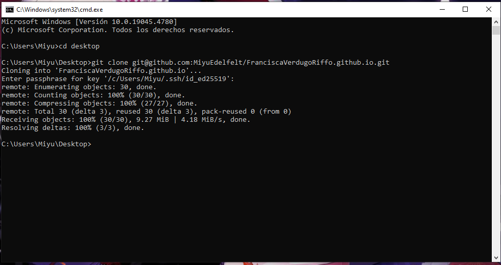
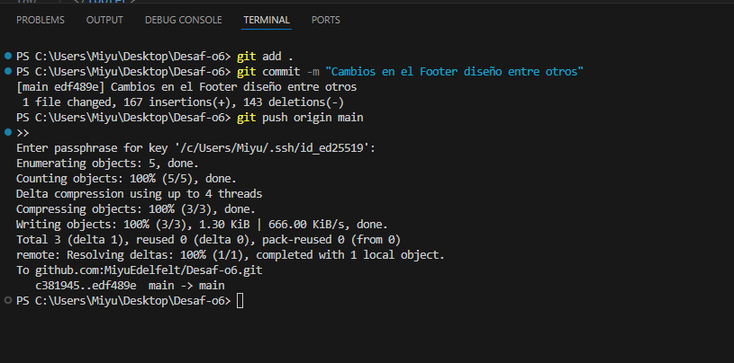
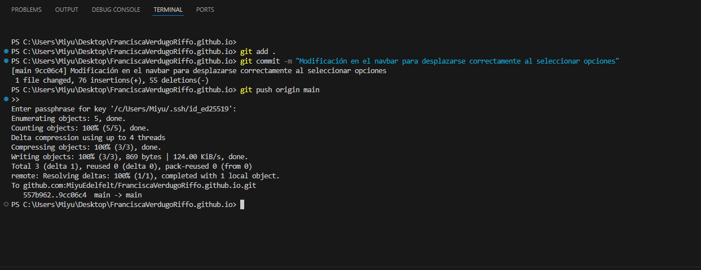

Forks y Commits
Aquí puedes ver los proyectos que he forkeado y los commits realizados como parte de mi portafolio.
Proyectos Forkeados
-
Desaf-o6
Realicé cambios en el footer para mejorar el diseño y la consistencia.

-
FranciscaVerdugoRiffo.github.io
Ajusté el navbar para que permita navegar correctamente entre las secciones del sitio.

Commits Realizados
-
Desaf-o6
Commit: "Cambios en el Footer diseño entre otros".
 -
FranciscaVerdugoRiffo.github.io
Commit: "Modificación en el navbar para desplazarse correctamente".
